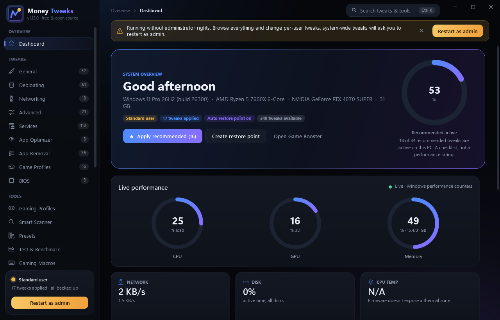
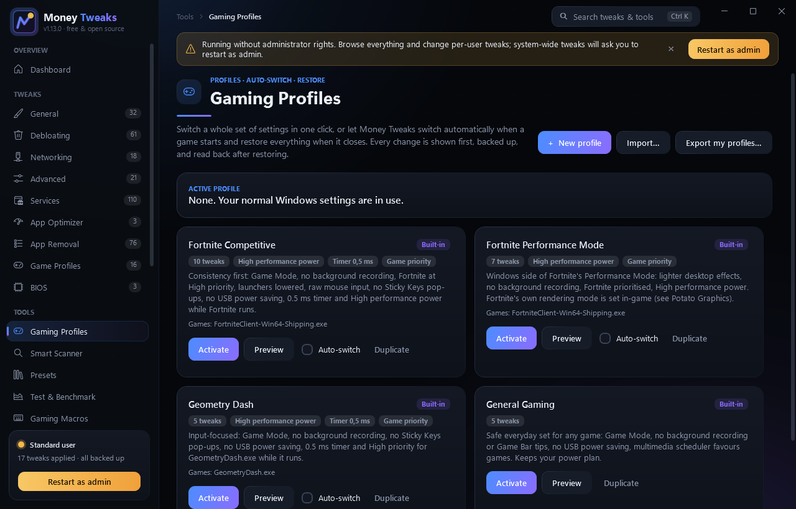

Tune Windows for games.
Undo anything.
Money Tweaks bundles 334 reversible tweaks, a game library, a live FPS overlay, a driver & Windows health check and a set of gaming tools in one fast, dark app. Every change is backed up first, labelled Safe or Caution, and undone with the same switch.

More than a list of switches
Alongside the tweak library, Money Tweaks ships with tools that handle the jobs gamers usually need three separate apps for.
Upgrade Advisor
Pick your game, settings and FPS target. Money Tweaks measures what's really holding you back (CPU, GPU, power limits, memory, VRAM, storage, heat or a frame cap) and ranks the three smartest moves by benefit per euro: free fixes first, upgrades only when they'd actually help. Projections are labelled; prices come from you, with source and date.
PC Cleaner
Closes background apps you don't need while playing (Safe / Review / Protected, polite close first) and removes verifiably disposable files: old temp files, crash dumps, caches, Windows Update leftovers via DISM. Review before deleting, 7-day quarantine, measured results. Personal files, browser data and system stores are never touched.
Performance Genome
Learns how your PC responds to CPU boost, GPU power and clock limits, Windows tweaks and game settings from its own measurements. Pick a goal and limits, let it run adaptive experiments with baselines and repeats, and get measured profiles with 95% intervals and a performance frontier. Predictions are always labelled; your settings are restored after every session.
Game Library
Finds your games from Steam and Epic manifests, the Riot Client, Roblox and Minecraft, plus any exe you add. A game only counts as running when its real executable runs from its install (Roblox Player and Studio are told apart). Per-game profiles, launch, Test Detection. Removing a game never uninstalls it.
Performance Overlay
FPS, frame time, 1% low, a frame-time graph, CPU/GPU load, RAM and temperatures on top of your game. Frame timing comes from the same Windows ETW Present events PresentMon uses: nothing is injected, nothing reads game memory. Hotkey, per-game layouts and auto-show.
Driver & Windows Health
Read-only checks for GPU, chipset, network, audio and storage drivers, Windows Update, blue screens, driver resets, crashes, throttling and disk health, plus SFC/DISM. Repairs only run after you confirm them. Results say "unable to check" instead of guessing.
Gaming Profiles
Fortnite Competitive, Fortnite Performance Mode, Geometry Dash and General Gaming, or your own. One click to switch, or switch automatically when the game starts and restore everything when it closes.
Smart Scanner
Reads your hardware, power plan, RAM, startup apps, background processes and network, then lists findings with severity, evidence and confidence. Fix, Undo or Ignore each one.
Test & Benchmark
Verify every tweak against what Windows actually reports, and run before/after benchmarks: a synthetic 3D stress scene with balanced A/B runs, real frame times, and verdicts only when a difference beats the noise.
Stretched Resolution
Pick a monitor, type any resolution and see its aspect ratio. Every change is checked with your display driver first and reverts automatically unless you confirm it.
Fortnite Stretched
Sets a custom resolution for Fortnite only, in its own GameUserSettings.ini, without touching your desktop. Backup, restore and reset included.
Gaming Macros
Timed key and mouse-button sequences with hotkey triggers, screen-colour triggers, pause and an emergency stop. Blocked in competitive anti-cheat games.
Potato Graphics
Fortnite potato studio with a before/after 3D preview, plus potato levels for Minecraft Java and Rocket League. Only the game's own settings files change, backed up first, with one-click restore. On NVIDIA cards, texture-filtering presets (including Legacy Potato, LOD bias 0x20) go into Fortnite's own driver profile with a backup, read-back verification and Restore.
Game Booster
One click: High/Ultimate power plan, close the background apps you pick, raise your game's priority and clear standby memory.
Input Delay Reducer
Holds a 0.5 ms kernel timer while the app is open and groups the input tweaks (mouse acceleration, sticky keys, MSI mode, timers).
Ping Stabilizer
Live latency, jitter and packet-loss graph, plus a 20-second diagnostic that tells you whether lag comes from your home network or your provider. Clearly labelled as generic ping, not game-server ping.
Custom Crosshair
Click-through overlay with cross, dot, T and circle styles, colours, gap, outline and per-monitor placement. Toggle with Ctrl + Alt + X.
Hardware Monitor
CPU, GPU, RAM, disk and network usage with sparklines, your specs, and a check that flags RAM running below its rated speed.
Backup & Restore
Restore points, a list of everything applied, and one button to undo it all.
Startup Apps
Switch sign-in apps off and on with the same flags Task Manager uses. Nothing gets deleted.
334 tweaks in 9 categories
Every tweak maps to a documented Windows setting: a registry value, service start type, power-plan setting, scheduled task, network option or Store app. Expand any card in the app to see exactly what it changes, the expected benefit, how sure we are, known limitations and conflicts, and how it's verified and undone. Browse them all in one searchable library, or by category with groups you can fold away. Settings that weaken security are never applied.
General
Visual effects, instant menus, Ultimate Performance plan, core parking, USB and PCI Express power saving, mouse acceleration, Game Mode, Game DVR, notification pop-ups, Explorer and taskbar.
Debloating
Telemetry, advertising ID, activity history, Start and lock-screen ads, Copilot, Recall, Widgets, Edge background mode and telemetry tasks.
Networking
Network throttling, TCP options, Cloudflare/Google/Quad9 DNS, adapter power saving, Energy-Efficient Ethernet, LSO, Teredo, LLMNR, and Nagle (marked TCP-only).
Advanced
Memory compression, prefetch, dynamic tick, HAGS, optimizations for windowed games, fullscreen optimizations, GPU MSI mode, MMCSS priorities, NTFS.
Services
Telemetry, Xbox, printing, remote access, sensors, Hyper-V guest and enterprise services set to Manual or Disabled.
App Optimizer
Below-normal priority for launchers and Discord, launcher auto-start off, idle-priority search indexer.
App Removal
Bing apps, Clipchamp, Solitaire, Teams, Xbox apps, Copilot, OneDrive and sponsored third-party apps like TikTok and Candy Crush.
Game CPU Priority
High CPU priority for Fortnite, VALORANT, CS2, Apex Legends, Rocket League, GTA V (Legacy and Enhanced), Roblox and Marvel Rivals, plus Fortnite on the dedicated GPU for two-GPU PCs.
BIOS
Step-by-step guides for Resizable BAR, XMP/EXPO memory profiles and CPU C-States, with an in-app RAM speed check.
See it before you install
Real screenshots captured by the app on a Windows 11 PC (version 1.13; the current version groups these pages in a sidebar and adds the Game Library, overlay and Health Center).

Built to be undone
Tweakers have a reputation for breaking things. Money Tweaks is designed so that every change is recorded and reversible.
SafeWell understood and low risk for almost every PC.
CautionUseful, but with a real trade-off. You'll see a warning and confirm before it applies.
- Backup before every change. Original values are saved to a JSON file per tweak and never overwritten by re-applying.
- All-or-nothing. If one step of a tweak fails, the steps already done are rolled back.
- Restore point first. One is created automatically before your first change each session.
- Admin only when needed. The app runs as a normal user and asks to restart elevated for system-wide tweaks.
- Transparent. "Show what changes" lists every registry value, service or command, and everything is logged.
Get the latest Money Tweaks
Free forever. No sign-up. Files are hosted on GitHub Releases.
Installer
Start-menu shortcut and uninstaller. Installs for your user account by default, without needing admin.
MoneyTweaks-Setup.exeRelease builds aren't code-signed (certificates cost money), so Windows SmartScreen may warn the first time. Click More info → Run anyway, or build it yourself.
Up and running in a minute
- Download the installer or portable ZIP above.
- Verify (optional): run
Get-FileHash MoneyTweaks-Setup.exe -Algorithm SHA256in PowerShell and compare the result with SHA256SUMS.txt. - Run it. If SmartScreen appears, choose More info → Run anyway.
- Restart as admin from the sidebar to unlock system-wide tweaks, then try Apply all recommended on the dashboard.
| Windows | Windows 10 1809 (build 17763) or newer, Windows 11 |
|---|---|
| CPU | x64 (64-bit Intel or AMD) |
| Runtime | Bundled, no separate .NET install needed |
| Disk | About 80 MB |
| Rights | Standard user to run; admin for system-wide tweaks |
Build from source
git clone https://github.com/MoneyMan82/money-tweaks.git cd money-tweaks dotnet run --project src\MoneyTweaks -c Release
Needs the .NET 10 SDK. scripts\build-release.ps1 produces the installer, ZIP and checksums.
What's new
Recent releases · October 2026
- 1.39: Upgrade Advisor: measures what holds your game back and ranks the three smartest fixes and upgrades by benefit per euro, with your own prices. PC Cleaner can clear standby memory.
- 1.38: PC Cleaner: close background apps safely (Quick, Custom, Clean & Play) and clean verifiably disposable files with review, quarantine and measured results.
- 1.37: Intelligent Feature Discovery: natural-language search in Ctrl+K, related settings with conflict warnings in every tweak, and the Tweak Map of the whole library.
- 1.36: Performance Genome: learns how this PC responds to combinations of settings from its own measurements, with goals, hard limits, adaptive experiments, a performance frontier and measured profiles.
- 1.35: CPU auto tuning: a measured CPU boost scan, and a Curve Optimizer / undervolt assistant that tests every core and tells you the next value.
- 1.34: CPU temperature from the free HWiNFO (read-only), next to MSI Afterburner and firmware.
- 1.33: Automatic GPU overclock scan: finds your card's highest passing core and memory offsets under load, takes a safety margin off and confirms the result.
- 1.32: Money Tweaks starts MSI Afterburner itself when you use its controls (asks once, or never again if you choose).
- 1.31: GPU offsets, undervolt curve, temperature limit, fan and a safe fan curve through MSI Afterburner's official SDK interface; CPU temperature via Afterburner; per-game CPU/GPU tuning in Gaming Profiles.
- 1.29: New CPU & GPU Tuning page: NVIDIA power limit and clock cap, CPU boost and efficiency profiles, self-checking stability tests with automatic undo, and guided steps for PBO, Curve Optimizer, Intel XTU, GPU undervolting and XMP.
- 1.28: Smart compatibility engine: every tweak is checked against your Windows version and hardware first, conflicting tweaks are blocked, Safe / Advanced / Experimental tiers, and a pre-apply report with current values, risks, restart and undo.
- 1.27: Honest results everywhere: no "applied" for tweaks that change nothing on your PC, undo history kept when nothing was undone, Startup Apps includes Startup-folder apps, Game Booster checks the power plan really came back.
- 1.26: Safety fixes: crash-proof backups, damaged backups never overwritten, update files re-checked before starting, safer Game Booster closing, macros stop instantly when a blocked game takes focus.
- 1.25.1: Settings › Hotkeys shows each shortcut as clean keycaps instead of cut-off boxes.
- 1.25: A custom sort picker with a sliding highlight and category chips replace the drop-downs in the tweak lists; the sidebar's reshuffling Recent list is gone, and Dashboard can no longer show up twice.
- 1.24: Polish pass: tweak groups fold and unfold with an animation (remembered, plus Collapse all / Expand all), closing animations for the window and dialogs, dark animated drop-downs, text boxes with placeholders at the right height, notes moved into each tweak's details, consistent page labels, and fixes across the dashboard, Ping Stabilizer and overlay pages.
- 1.30 / 1.23: New version numbers (+0.1 per update, +0.01 per minor update), release notes from the changelog, and smooth motion everywhere: smooth scrolling, page entrances, sliding sidebar groups, dialog pop-in, animated buttons.
- 1.22: Reorganized app: grouped, collapsible sidebar, favourites and recent pages, Ctrl+K search over pages, tweaks, games and settings, the All Tweaks library, a customizable dashboard, and a Run in the background button.
- 1.21.0: Game Library with real Steam/Epic/Riot/Roblox/Minecraft detection, identity-checked running games, Test Detection and per-game profiles.
- 1.20.0: Live Performance Overlay: FPS, frame time and 1% low from Windows ETW Present events, plus CPU/GPU, RAM and temperatures.
- 1.19.0 / 1.18.0: Driver & Windows Health Center, and NVIDIA texture-filtering presets for Fortnite, including Legacy Potato (LOD bias 0x20) with backup, verify and restore.
- 1.17.0 / 1.16.0: Start with Windows as a background tray process; single instance.
- 1.15.0 / 1.14.0: Automatic stretched resolution while Fortnite runs; 2288×1440 preset and GPU custom-resolution guide.
- 1.13.0: Fortnite Stretched: a custom resolution for Fortnite only, written to its own settings file with backup, restore and reset.
- 1.12.0: Stretched Resolution: real monitor modes, driver-checked changes with an automatic-revert countdown, presets and scaling.
- 1.11.0: Six new verified tweaks, benefit/confidence/verification details on every tweak, and a network diagnostic.
- 1.10.0: Gaming Profiles with automatic switching when a game starts and full restore when it closes.
- 1.9.0: Synthetic 3D benchmark, Smart Optimization Scanner, balanced A/B testing and honest verdicts.
- 1.7.0: Tweak verification (read every setting back) and before/after benchmarks.
- 1.6.0: Macro Maker: screen-colour triggers, pause/resume and a draggable timeline.
- 1.5.0: Gaming Macros and Presets.
1.1.0 · October 2026
- Potato Graphics levels: Low / Potato / Ultra potato, 3D resolution slider, Performance mode for low-poly builds, uncapped FPS, stretched 1440×1080.
- In-app updates: one-click, checksum-verified updates from GitHub Releases.
1.0.0 · October 2026
- First release. 334 reversible tweaks across 9 categories.
- Tools: Potato Graphics, Game Booster, Input Delay Reducer, Ping Stabilizer, Custom Crosshair, Startup Apps, Hardware Monitor.
- Safety: per-tweak backups, rollback on failure, automatic restore point, Safe/Caution labels, activity log.
Questions
Is it really free?
Yes. There's no paid tier, subscription, account, ads or locked feature. The full source is on GitHub under the MIT license.
How much FPS will I gain?
It depends entirely on your hardware and what was running before. We don't promise a number. The biggest wins usually come on PCs with lots of background bloat, weak CPUs, or RAM running below its rated speed (the dashboard checks that).
Can a tweak break my PC?
Every tweak backs up the original values and can be undone from the same switch. Caution tweaks have real trade-offs and ask before applying. As a last resort, roll back with the restore point Money Tweaks creates before your first change.
Will it get me banned in games?
Money Tweaks changes Windows settings, not game memory or files (except Potato Graphics, which edits the same settings file the game's own menu writes). The crosshair and the performance overlay are ordinary topmost windows: nothing is injected into the game, and FPS is read from Windows' own ETW events, the same source PresentMon uses. Macros are blocked while competitive anti-cheat games run. Still, check your game's rules on overlays before using one in competitive play.
Why does Windows say it's an unrecognized app?
The builds aren't code-signed. You can verify the SHA-256 hash, read the source, or build it yourself with one command.
How do I update?
Money Tweaks checks GitHub for new versions when it starts and shows an Update now banner. The download is checksum-verified and the app restarts on the new version. You can also use Settings & About → Check for updates. Version 1.0.0 had no updater, so install 1.1.0 once manually.
How do the version numbers work?
Since 1.23, releases count up in hundredths (1.24, 1.25, 1.26), with a third number for small fixes (1.25.1). GitHub tags end in .0 (v1.26.0) so older copies can still update themselves.
What happens when I uninstall?
Applied tweaks stay applied. Undo them first from Backup & Restore if you want Windows back to how it was. Your backups in %LOCALAPPDATA%\MoneyTweaks are kept so a reinstall can still undo them.
Nothing leaves your PC
Money Tweaks has no telemetry, analytics, accounts or update pings. It only goes online to check GitHub for new versions (you can turn that off in Settings) and when you use the Ping Stabilizer (ICMP pings to the host you choose). Settings, backups and logs stay in %LOCALAPPDATA%\MoneyTweaks. This website uses no cookies, trackers or third-party scripts.
Security
Found a security problem? Please open a private security advisory on GitHub rather than a public issue. Some tweaks (Memory Integrity, Print Spooler, location) trade security or features for speed. They're labelled Caution and explain the trade-off.
Contact
Bugs and ideas: GitHub Issues
Source: github.com/MoneyMan82/money-tweaks